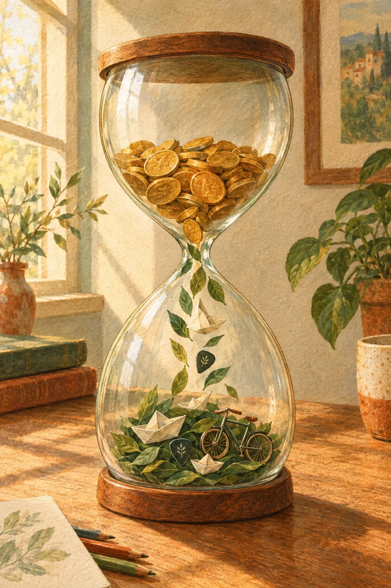
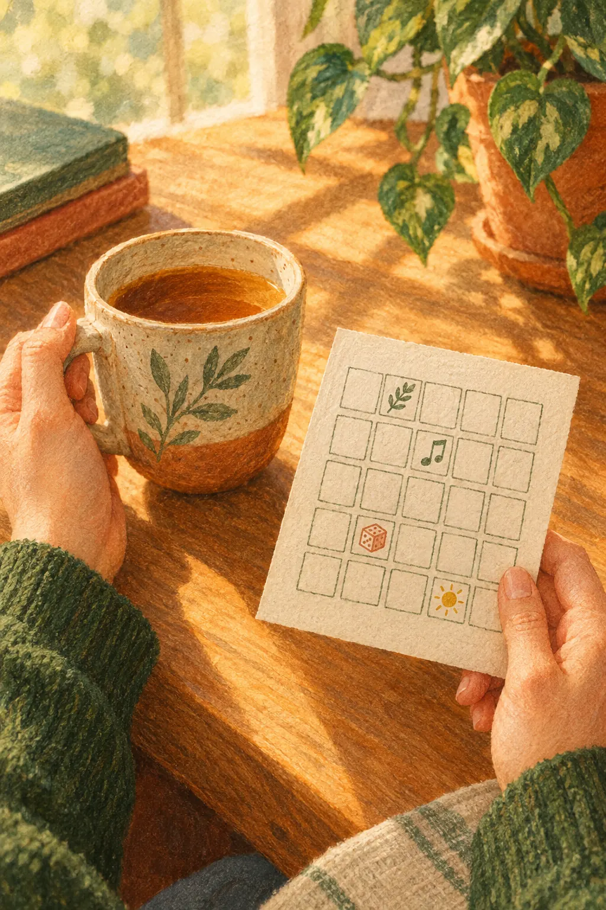

01 / EMOÇÃO + RESPEITO
Adrenalina com jogo limpo
Acelerar em circuito fechado. Celebrar juntos, com proteção e respeito a quem divide a pista.
Invista em viver.
Dinheiro, trabalho e tecnologia a serviço de uma vida com mais autonomia, descobertas e conexões. O próximo grande passo pode começar com dez minutos.
TURBO TEMI 360X · EXPERIÊNCIAS
Emoção, adrenalina e gente de verdade na sua vida. Curtir com presença, honra, justiça e respeito. Sem precisar de álcool.
Explorar as 10 imagens
01 / EMOÇÃO + RESPEITO
Acelerar em circuito fechado. Celebrar juntos, com proteção e respeito a quem divide a pista.

02 / CONEXÃO + CONSCIÊNCIA
Dança, risadas e brindes sem álcool. Curtir a noite com liberdade para escolher e energia para lembrar.

03 / NATUREZA + PARCERIA
O mar, a turma e uma nova descoberta. Aprender junto, respeitar os limites e sentir cada momento.
Artes conceituais geradas com IA · Pessoas fictícias · Widescreen · Respeite seus limites e escolha experiências com preparo.
Capítulo I · A ideia central
A mudança proposta é substituir a acumulação sem finalidade por escolhas conscientes sobre o que queremos viver, quanto precisamos para sustentar essas escolhas e quanto tempo estamos dispostos a dedicar ao trabalho.
Avaliamos cada escolha pelo que ela permite experimentar. Seis dimensões servem de régua, e a própria pessoa define o peso de cada uma:
Ter períodos sobre os quais podemos decidir, sem pedir licença.
Preservar as condições físicas e mentais para participar da vida.
Brincar, conhecer, criar e desfrutar, sem precisar justificar.
Cultivar relações desejadas, respeitosas e acolhedoras.
Enfrentar imprevistos e receber cuidado ao longo da vida.
Contribuir, aprender e realizar algo com significado pessoal.
Nem todo prazer precisa virar profissão, renda, conteúdo publicado ou demonstração de produtividade. Um hobby pode continuar sendo apenas algo de que gostamos.
Uma reserva que permite enfrentar um imprevisto já está sustentando qualidade de vida. Por isso o projeto mantém o planejamento para necessidades presentes, emergências e envelhecimento, enquanto abre espaço para experiências atuais. Essa combinação é a mesma que a Comissão de Valores Mobiliários recomenda: planejar emergências e aposentadoria e, ao mesmo tempo, destinar recursos à qualidade de vida.
O objetivo é dar finalidade ao patrimônio e proteger tempo para aproveitá-lo. O projeto não recomenda liquidar patrimônio nem assumir dívidas; recomenda decidir com clareza para que serve cada real e cada hora.
A metáfora é boa para descrever uma atividade que ocupa espaço demais na vida, mas não é equivalência médica. O que a evidência sustenta: a análise OMS/OIT de 2021 associou jornadas de 55 horas ou mais por semana a maior risco de AVC e de morte por cardiopatia isquêmica, com cerca de 745 mil mortes atribuíveis em 2016. Jornada excessiva, e não investir em si, é o fator de risco documentado.
Também não existe um teto universal de renda a partir do qual dinheiro deixa de importar: a reanálise de Killingsworth, Kahneman e Mellers (2023) encontrou relações diferentes entre renda e bem-estar em grupos distintos. O projeto depende de valores, não de uma promessa de longevidade.
Capítulo II · Arquitetura da missão
A pessoa começa por uma ação pequena; as outras possibilidades ficam disponíveis para depois. O sistema deve exigir menos tempo de manutenção do que o tempo que ajuda a liberar.
Preferências, valores, curiosidades e limites. Saber o que preservar, o que experimentar e o que reduzir.
Entrega: uma página com o que preservar, experimentar e reduzir.
Relacionar dinheiro, compromissos e experiências. Toda compra passa por três verificações.
Entrega: orçamento viável e períodos de tempo escolhido.
Autonomia sobre tarefas e horários; interesse como porta de entrada para aprender.
Entrega: um ajuste negociável e uma experiência de aprendizagem.
Lazer, descanso, amizade, cultura e intimidade desejada, com consentimento e dignidade.
Entrega: oportunidades acessíveis de convivência.
Reduzir o esforço de organizar experiências e acrescentar imaginação, sem decidir pela pessoa.
Entrega: sugestões simples, agenda assistida e narrativas opcionais.
Módulo I · Instrumento de bordo
A sociedade funciona melhor quando cada pessoa sabe do que gosta, porque é isso que ela fará com alegria e bem feito. A bússola começa com cinco perguntas em linguagem livre:
As respostas formam um mapa de preferências que pode mudar. A pessoa pode gostar de algo sem ter habilidade, ter habilidade sem querer trabalhar com aquilo, ou descobrir um interesse novo ao experimentar. Nenhum diagnóstico de personalidade, nenhum destino profissional.

Módulo II · Propulsão
Os recursos se organizam pela função que cumprem na vida, não pelo produto financeiro em que estão aplicados.
| Destino | Pergunta orientadora | Exemplos |
|---|---|---|
| Vida cotidiana | O que sustenta minha vida e meus compromissos? | Moradia, alimentação, saúde, obrigações. |
| Proteção futura | Como preservarei escolhas diante de imprevistos e do envelhecimento? | Reserva e planejamento de longo prazo. |
| Experiências presentes | O que desejo viver e consigo realizar agora? | Lazer, convivência, cultura, projetos pessoais. |
| Tempo disponível | Que tarefa posso simplificar de forma justa? | Automação útil ou serviço que devolva tempo. |
| Contribuição | Que causa desejo apoiar dentro das minhas possibilidades? | Ajuda, participação comunitária, criação. |
Instrumento · Conversor
Exemplo do projeto: uma compra de R$ 600 representa 12 horas de trabalho para quem recebe R$ 50 líquidos por hora. Faça o seu. Nada sai do seu navegador.
Há pesquisa indicando que usar dinheiro para economizar tempo pode melhorar o bem-estar: o estudo Buying time promotes happiness (PNAS, 2017) combinou levantamentos com um pequeno experimento de 60 adultos. O resultado apoia considerar esse uso do dinheiro; não garante que toda terceirização ou compra compense.
Quando a margem financeira for zero, a frente de qualidade de vida continua: descanso, música, conversa, jogos já disponíveis, criação e atividades gratuitas fazem parte dela. O projeto não define percentuais universais de gasto; a margem depende de renda, obrigações, dívidas e proteção necessária.
Módulo III · Tripulação
Permitir que a pessoa trabalhe no que gosta, do jeito que consegue, é ponto de partida. Treinamento, capacidade, condições de trabalho e responsabilidades também entram na decisão: na saúde, interesse pessoal não substitui competência, supervisão e segurança assistencial.
Um estudo publicado na Nature Human Behaviour em julho de 2025 acompanhou 2.896 trabalhadores de 141 organizações numa intervenção de redução de jornada com salário preservado e reorganização do trabalho; houve melhora de bem-estar após seis meses. Isso apoia testar mudanças contextualizadas, não presumir que qualquer redução de jornada produz o mesmo resultado.
Fundamentos essenciais continuam. O que muda é o espaço de escolha e a aplicação prática: matérias mais estimulantes, ligadas a questões reais do estudante.
| Trilha | Experiência possível | O que pratica |
|---|---|---|
| Vida prática | Planejar uma experiência com orçamento real. | Matemática, comparação, decisão. |
| Tecnologia e IA | Criar um recurso útil e conferir as respostas. | Pensamento crítico, verificação. |
| Corpo e relações | Emoções, limites, consentimento e busca de ajuda. | Autocuidado, comunicação. |
| Arte e natureza | Histórias, música ou um projeto ambiental. | Observação, expressão, colaboração. |
| Ofícios e profissões | Experimentar atividades com orientação. | Descoberta de interesses, feedback. |
Uma metanálise de 225 estudos encontrou benefícios da aprendizagem ativa em cursos superiores de ciências, tecnologia, engenharia e matemática. O interesse funciona como porta de entrada, mas entretenimento ou gamificação isolados não comprovam aprendizagem, e a escola também precisa ajudar a enfrentar o que é difícil.
Módulo IV · Estação de convívio
Sexo pode integrar uma vida boa para quem o deseja. Amizade, romance, convivência familiar e períodos sem relacionamento também podem. A natureza inspira movimento, convivência e experiência sensorial; as regras humanas se constroem com consentimento, dignidade, cuidado e consequências para as pessoas.
A formulação do projeto reconhece a diversidade: nem todo jovem deseja transar, e ninguém deve ser pressionado a desejar. A autonomia inclui querer, esperar, recusar e mudar de ideia. Não é necessário informar a vida íntima ao projeto, e frequência sexual, número de parceiros ou estado civil nunca serão indicadores de êxito.
O relatório da Comissão da OMS sobre Conexão Social (30 de junho de 2025) reúne evidências sobre solidão e isolamento e propostas de ação. A efetividade de cada programa específico precisa ser avaliada localmente.
É uma regra de desenho do programa. A segurança é trabalhada por redução de riscos; não existe promessa responsável de risco zero.
Livre, informado, específico, contínuo e revogável, sem pressão econômica, afetiva ou institucional.
Recusar, encerrar contato ou abandonar uma atividade a qualquer momento, sem constrangimento.
Regras claras contra assédio, canal de acolhimento e moderação humana.
Coleta mínima de dados; relatos e informações de saúde fora de perfis públicos e comparações.
Acesso a informação e profissionais: contracepção, prevenção de ISTs, testagem e cuidado quando indicado.
Amizade, romance, participação em grupo ou recusa têm o mesmo reconhecimento.
A frente juvenil é de educação apropriada à idade, proteção, diálogo e acesso a orientação profissional. O programa não organiza encontros nem experimentação sexual de menores. A OMS (atualização de 11 de março de 2026) informa que educação integral em sexualidade de qualidade não aumenta a atividade sexual nem antecipa seu início, e pode apoiar comportamentos protetores. A UNESCO oferece uma estrutura progressiva, baseada em direitos e no melhor interesse da pessoa jovem.
Módulo V · Carta celeste
Como numa missão espacial, cada sistema a bordo existe para uma função: aqui, diminuir o esforço necessário para organizar experiências que a pessoa deseja viver. O critério técnico é o tempo líquido devolvido, descontando o que se gasta para configurar, corrigir e manter a ferramenta.
| Função da IA | Uso prático | Controle da pessoa |
|---|---|---|
| Guardião do tempo | Sugerir períodos livres e simplificar a preparação. | Aceitar, editar, adiar ou ignorar. |
| Curadoria | Até três opções por vez, com custo e duração. | Corrigir preferências e escolher. |
| Organização | Listas, resumos e planos pequenos. | Revisar antes de qualquer ação externa. |
| Caderno | Guardar o que a pessoa deseja repetir. | Registrar pouco, exportar e apagar. |
| Narrador | Histórias, missões e ambientes imaginativos. | Ativar ou desligar a fantasia. |
Compras, pagamentos, mensagens e alterações de compromissos exigem autorização da pessoa. Dados íntimos não financiam publicidade nem avaliação de trabalhadores. Realidade aumentada e ambientes imersivos ficam para etapas posteriores, quando acrescentarem valor.
Aqui, magia significa narrativa, imaginação, arte e experiência lúdica. A fantasia é opcional. Alegações sobre saúde, finanças e funcionamento da tecnologia continuam dependendo de evidências verificáveis.
Uma noite de jogos ou encontro entre pessoas próximas.
Um convite opcional para descansar, sem culpa.
Uma experiência de natureza, arte ou descoberta.
Um registro voluntário de lembranças e experiências.
Criação de histórias, personagens, imagens e jogos.
Capítulo III · Órbita social
A versão social precisa criar condições de acesso à vida boa, especialmente para quem tem menos renda, mobilidade, tempo ou apoio.
Possíveis fontes de manutenção: contribuição voluntária, doações, editais, cooperação institucional e serviços remunerados com transparência. Cada opção exige análise própria, e a participação nunca pode ser condicionada à compra de produtos. Estas são propostas de organização social, ainda sujeitas a teste; não são leis vigentes nem impactos já medidos.
Capítulo IV · Trinta dias de voo
Objetivo: encontrar duas práticas que a pessoa deseja continuar porque favorecem descanso, prazer ou conexão e cabem em sua realidade. Gasto adicional inicial possível: R$ 0. Não é um teste clínico de longevidade.
As durações são adaptáveis. Dez minutos podem ser suficientes para começar. Os períodos saem do tempo disponível ou de simplificações; o projeto não pressupõe tirar tempo de sono, cuidado ou compromissos essenciais.

Dias 1 a 7
Três interesses, uma fonte de desgaste e dois períodos possíveis de 30 a 60 minutos.
Pronto quando: uma experiência escolhida e espaço realista para realizá-la.
Dias 8 a 14
Duas atividades acessíveis e um contato social desejado, se fizer sentido.
Pronto quando: você reconhece o que deu prazer e o que trouxe dificuldade.
Dias 15 a 21
Simplificar uma tarefa e testar uma forma mais interessante de aprender ou trabalhar.
Pronto quando: uma mudança pequena aplicada, com responsabilidades preservadas.
Dias 22 a 30
Repetir o que fez bem e retirar o que virou obrigação.
Pronto quando: duas práticas escolhidas para continuar, ou decisão consciente de ajustar.
Telemetria
Responda em palavras ou use a escala pessoal opcional. Não há pontuação global, ranking, penalidade por faltar ou obrigação de sequência diária. Nenhum indicador estima “anos de vida ganhos”: uma melhora percebida em 30 dias é sinal para continuar ou ajustar, não prova de causalidade.
Se a organização aumentar o desgaste, simplifique o registro. Se o gasto comprometer obrigações, volte às opções gratuitas. Se uma interação trouxer pressão ou desconforto, interrompa e use os canais de apoio.
Escala pessoal de 0 a 10, só para você. Nada é salvo.
Escudo térmico
Transmissão
Cole este texto no assistente de sua preferência para que ele atue dentro das regras do projeto.
Atue como assistente do Projeto Tempo de Viver 360X, concebido por Aldenir Rocha de Oliveira Filho. Ajude a converter tempo, recursos e tecnologia em uma vida com autonomia, descanso, prazer e vínculos, mantendo segurança financeira e responsabilidades. Use apenas informações atuais fornecidas ou confirmadas. Comece identificando o que desejo viver, o tempo disponível, o orçamento possível, inclusive zero, e limites relevantes. Apresente até três opções concretas, com duração, custo estimado claramente identificado e preparação necessária. Escolha comigo uma próxima ação pequena, sem criar uma agenda excessiva. Use interesses como hipóteses revisáveis. Preserve fundamentos de aprendizagem e qualidade do trabalho. Trate intimidade como escolha voluntária de adultos; para adolescentes, mantenha abordagem educativa e protetiva. Não suponha que todas as pessoas desejam sexo, romance, exposição social ou a mesma forma de lazer. Utilize o Reaverso como narrativa opcional: missões, personagens, arte e imaginação. Separe essa linguagem de afirmações científicas. A IA pode sugerir, organizar e preparar; ações externas, pagamentos, mensagens e mudanças de compromisso exigem autorização apropriada. Não recomende liquidar patrimônio ou assumir dívidas para seguir o projeto. Não estime expectativa de vida individual nem prometa aumento de longevidade. Quando uma afirmação depender de pesquisa, cite fonte e data. Encerre com uma próxima ação de até dez minutos e uma forma simples de perceber se ela ajudou. Grato desde já!
Arquivo
Consultadas em 18 de outubro de 2026. A literatura ajuda a desenhar e testar o projeto; ela não comprova que esta proposta, como conjunto, aumentará a expectativa de vida ou produzirá prosperidade automática.